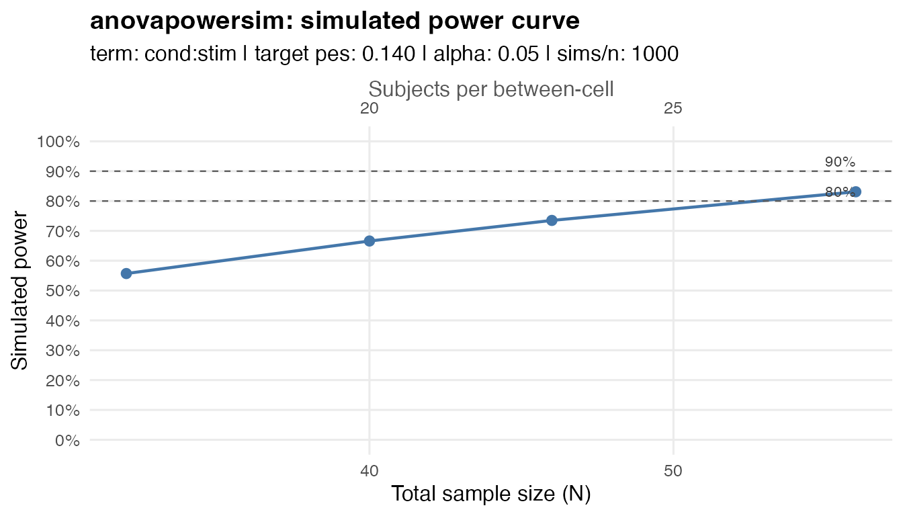

anovapowersim simulates power for balanced factorial
ANOVA designs. Specify the factors/levels, the term of interest, and a
target partial eta squared. anovapowersim generates default
term-specific cell means, simulates datasets, refits the ANOVA with
stats::aov(), and estimates power.
Search for the required sample size
The easiest way to get your required sample size is to use
power_n() to search for the sample size needed to reach the
requested power.
This example is a 2 x 2 mixed design with one between-subjects factor
(cond) and one within-subject factor
(stim).
We specify that we are interested in the cond:stim
interaction, and that we want to have 80% power to detect a partial eta
squared of 0.14. power_n() will search for the required
sample size per between-subject cell, so n = 13 gives total
N = 26.
power_n(
between = c(cond = 2), # cond has 2 levels
within = c(stim = 4), # stim has 4 levels
term = "cond:stim",
target_pes = 0.14,
alpha = 0.05,
power = 0.80,
n_sims = 1000, # use 5000+ for a more precise estimate
seed = 123 # for reproducibility
)#> <anovapowersim_curve>
#> term: 'cond:stim'
#> target power: 0.800
#> alpha: 0.05
#> effect size: pes = 0.14
#> n values: 5 per-cell sample sizes visited
#> sims per cell size: 1000
#> SS type: III
#> n needed for between-subjects cell: 13
#> total N needed: 26
#>
#> n_per_cell total_n n_sims num_df den_df ncp power_calc power_sim
#> 10 20 1000 3 54 8.791 0.665 0.665
#> 12 24 1000 3 66 10.744 0.767 0.783
#> 13 26 1000 3 72 11.721 0.808 0.808
#> 15 30 1000 3 84 13.674 0.872 0.882
#> 20 40 1000 3 114 18.558 0.958 0.951Note: here we use 1000 simulations for a quick example, but the package defaults to 10000 simulations for more precise estimates.
The output table uses compact column names: n_per_cell
is the sample size per between-subject cell, total_n is the
full sample size, num_df and den_df are the
ANOVA degrees of freedom, ncp is the noncentrality
parameter, power_calc is the noncentral F power
calculation, and power_sim is the simulation estimate.
Simulate a power curve
You might want to see how power changes across a range of sample
sizes. power_curve() simulates power across a range of
sample sizes, which you can specify with n_range. The
result is a tidy data frame that you can plot with
plot_power_curve().
pc <- power_curve(
between = c(cond = 2),
within = c(stim = 2),
term = "cond:stim",
target_pes = 0.14,
n_range = c(16, 20, 23, 28), # n per between-subject cell
n_sims = 1000,
seed = 123
)
pc#> <anovapowersim_curve>
#> term: 'cond:stim'
#> target power: <not specified>
#> alpha: 0.05
#> effect size: pes = 0.14
#> n values: 4 per-cell sample sizes visited
#> sims per cell size: 1000
#> SS type: III
#> n needed for between-subjects cell: <not reached>
#> total N needed: <not reached>
#>
#> n_per_cell total_n n_sims num_df den_df ncp power_calc power_sim
#> 16 32 1000 1 30 4.884 0.571 0.557
#> 20 40 1000 1 38 6.186 0.679 0.666
#> 23 46 1000 1 44 7.163 0.745 0.735
#> 28 56 1000 1 54 8.791 0.829 0.831
Advanced options
Run simulations in parallel
For larger simulation runs, set parallel = TRUE. If you
do not set cores, anovapowersim uses one fewer
than the number of available cores and prints a message with the chosen
count. Set cores explicitly when you want a fixed number of
cores.
power_curve(
between = c(cond = 2),
within = c(stim = 2),
term = "cond:stim",
target_pes = 0.14,
n_range = c(16, 20, 23, 28),
n_sims = 5000,
parallel = TRUE,
cores = 4,
seed = 123
)Match the G*Power convention
By default, anovapowersim calibrates the simulated cell
means so the empirical reference dataset has the requested partial eta
squared under the fitted stats::aov() model. This
corresponds to the fitted ANOVA denominator-df noncentrality
convention.
Set gpower = TRUE when you want the G*Power-style
convention (when using the ’as in Cohen (1988) option for
within-subjects designs) lambda = total_n * f^2.
power_n(
between = c(cond = 2),
within = c(stim = 4),
term = "cond:stim",
target_pes = 0.14,
alpha = 0.05,
power = 0.80,
n_sims = 1000,
seed = 123,
gpower = TRUE
)#> <anovapowersim_curve>
#> term: 'cond:stim'
#> target power: 0.800
#> alpha: 0.05
#> effect size: pes = 0.14
#> n values: 7 per-cell sample sizes visited
#> sims per cell size: 1000
#> G*Power convention: TRUE
#> SS type: III
#> n needed for between-subjects cell: 35
#> total N needed: 70
#>
#> n_per_cell total_n n_sims num_df den_df ncp power_calc power_sim
#> 28 56 1000 3 162 9.116 0.706 0.695
#> 31 62 1000 3 180 10.093 0.755 0.734
#> 33 66 1000 3 192 10.744 0.784 0.780
#> 34 68 1000 3 198 11.070 0.798 0.796
#> 35 70 1000 3 204 11.395 0.811 0.821
#> 42 84 1000 3 246 13.674 0.883 0.876
#> 56 112 1000 3 330 18.233 0.959 0.967